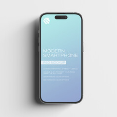
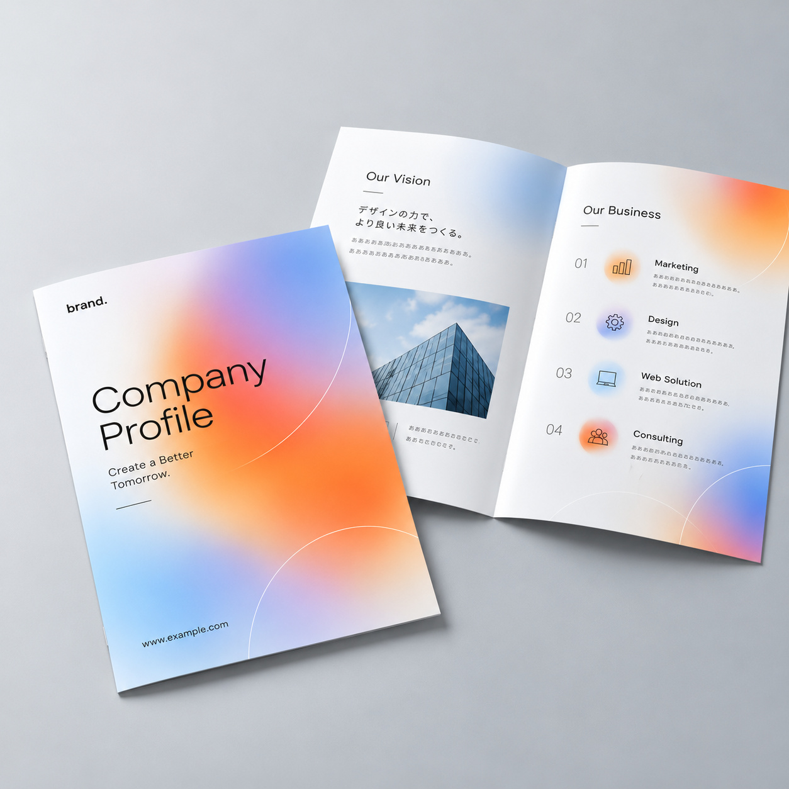
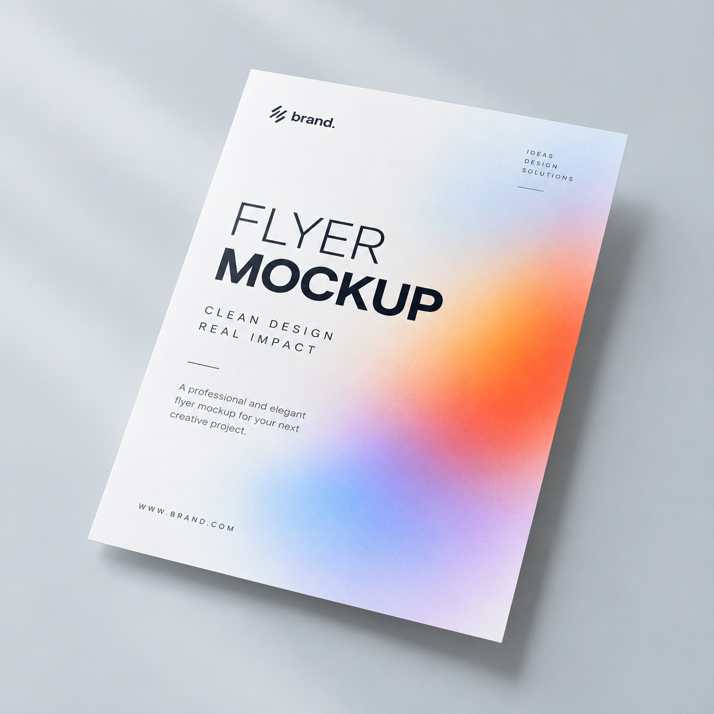
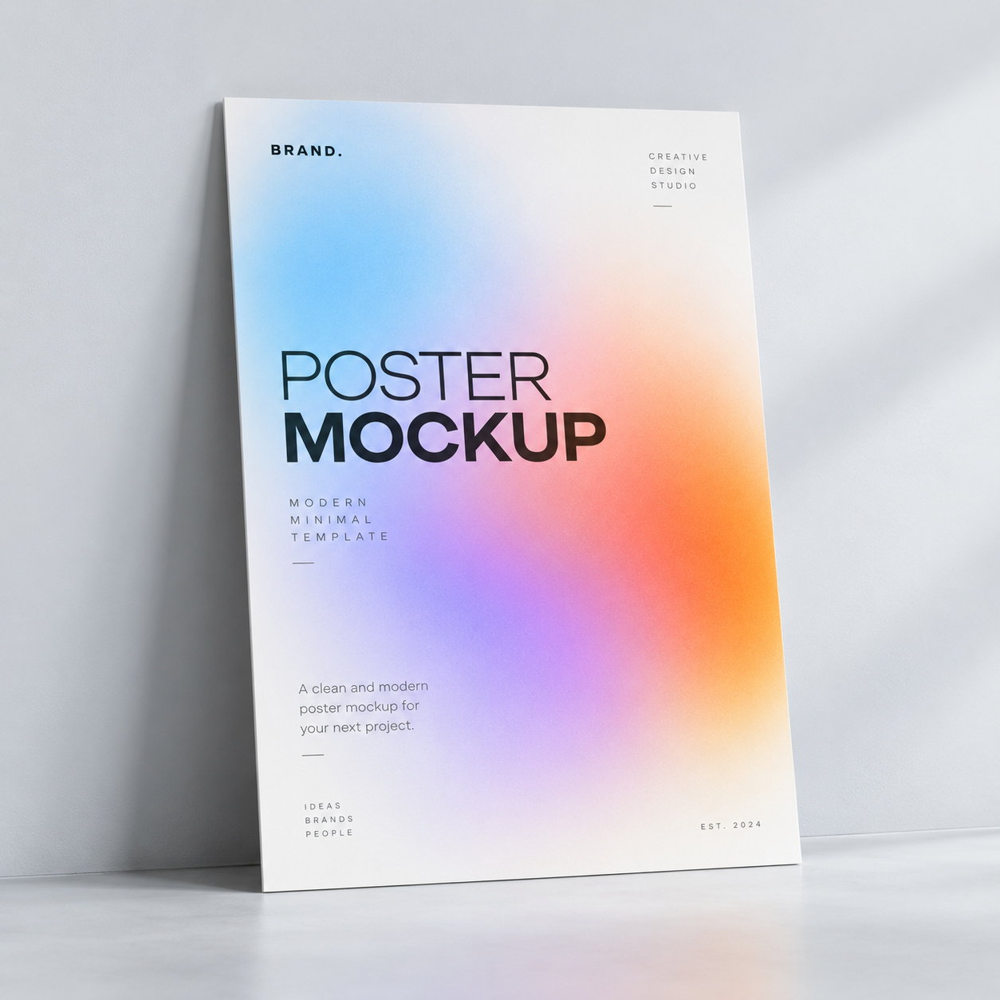

Graphic Design
広告、ポスター、パンフレット、パッケージの企画・デザイン制作を担当。目的やターゲットに合わせたビジュアル設計から入稿まで行います。
AIの活用スキルとプログラミングの知識を活かし、変化に柔軟に対応するデザインを提案します。
サービス
広告、ポスター、パンフレット、パッケージの企画・デザイン制作を担当。目的やターゲットに合わせたビジュアル設計から入稿まで行います。
Webサイトの企画・構成、情報設計、UIデザイン、画像制作を担当。目的とユーザー視点を踏まえ、使いやすく魅力的なサイトを制作します。
グラフィック・Web制作の企画、デザイン方針策定、制作指示、進行・品質管理を担当。関係者と連携し、目的に沿った制作物を実現します。
制作実績

UIデザイン
Figmaでデザインを設計し、AIを活用して、HTML/CSSで実装した個人サイトです。

Webデザイン

Webデザイン

グラフィックデザイン

グラフィックデザイン

グラフィックデザイン
私について
WebデザインとAIコーディングを学習中の小畑 光央です。